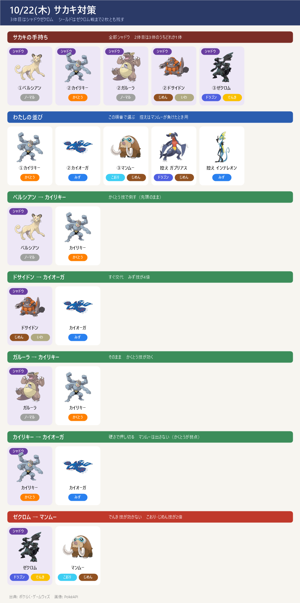

- いまの状況：10/10 に1戦目を勝利済み（実際の並び：カイリキー → カイオーガ → ガブリアス）。2個目のレーダーは受け取り済みで、挑戦は保留中。挑むときは道具からレーダーを起動する
- サカキの手持ち（10/2〜）：①ペルシアン（ノーマル）→ ②カイリキー／ガルーラ／ドサイドンのどれか1体 → ③シャドウゼクロム（ドラゴン・でんき）。すべてシャドウ
- ゼクロムの弱点：じめん・こおり・ドラゴン・フェアリー。じめんタイプはでんき技が効かないので特に安定
- わたしの並び（この順番）：①カイリキー → ②カイオーガ → ③マンムー（控え：ガブリアス）
- シールド：2枚ともゼクロム戦まで残す。サカキも2枚持っているので、最初は早く撃てるゲージ技でシールドを使わせる
2体目ごとの動き方（対面チャート）

- 下の画像は、サカキの手持ちと、2体目に出てくる相手ごとの受け役をまとめたもの。先頭はカイリキーで、2体目を見てから動く
2体目ごとの交代（タップで開く）
- ペルシアン → カイリキーのかくとう技で倒す（先頭のまま）
- 2体目がドサイドン → すぐカイオーガに交代（みず技が4倍）
- 2体目がガルーラ → カイリキーのまま
- 2体目がカイリキー → カイオーガで受けて倒す（マンムーはかくとうが弱点なので出さない）
- ゼクロム → マンムー（でんき技が効かない・こおり・じめんが2倍）。控えのガブリアスはドラゴン技を2倍で受けるので控えに置く
理想の技・再戦・レーダー
理想の技（タップで開く）
- マンムー＝こなゆき／ゆきなだれ・10まんばりき
- カイリキー＝カウンター／ばくれつパンチ・クロスチョップ
- カイオーガ＝たきのぼり／なみのり・ハイドロポンプ
- ガブリアス＝マッドショット／じしん
- 再戦：同じ場所のサカキなら、負けても手持ち（2体目・技）は変わらない。負けたら2体目を見て組み直し、何度でも挑める（レーダーは消えない）。別の場所のサカキだと変わることがある
- 2個目のレーダー：GOパス収穫祭デラックスのランク報酬だった（受け取りは 10/7(水) 20:00 で終了）
サイトで違っていた点
- 並びの3体目：攻略サイト（ポケらく・ゲームウィズ）の推奨は③マンムー（でんきが効かず、こおり・じめんが2倍）。ただし10/10 に実際に勝ったときは③ガブリアスだった。どちらもゼクロムに強い（ガブリアスはじめん技のじしんで攻撃できる）→ 手持ちの育ち具合で選ぶ
- レーダーの上限：以前のメモでは「レーダーは2個以上持てる（上限は見当たらない）」としていた（参考）
出典: サカキの手持ち・弱点: ポケらく・ゲームウィズ（2サイト一致）／ 並び・技: 実戦メモ＋PvPoke ゲームデータ／ 勝利記録: 10/10（カイリキー→カイオーガ→ガブリアス）
画像: PokéAPI ／ 更新 2026-10-22